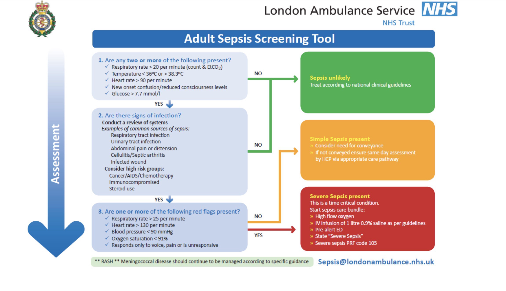

Incident
Priority
Patient
Clinical Frailty Scale

Secondary Survey
ECGs
Injury images / files
History
Images and supporting files
Take a photo, insert an existing image, or attach a supporting file.
Observations
| Time | RR | SpO2 | BP | HR | Temp | ETCO2 | BM | Ketones | AVPU | Pupils | GCS | NEWS2 |
|---|
NEWS2 escalation support
A NEWS2 score of 5 or more has been recorded. Review the patient clinically and consider whether the sepsis screening tool is relevant.

Consent / Capacity
Trauma
Standard Trauma Tool
Silver Trauma Tool
Interventions
| Time | Type / pain | Location | Outcome | Clinician | Reason |
|---|
Drugs
| Time | Drug | Dose | Route | Location | Outcome | Reaction | Clinician |
|---|
ALS Event Record
| Time | Event / rhythm | Shock | Drug / dose | Clinician |
|---|
Outcome
Sign Off
At least two clinician sign-offs are provided. Add or remove additional clinicians as required.